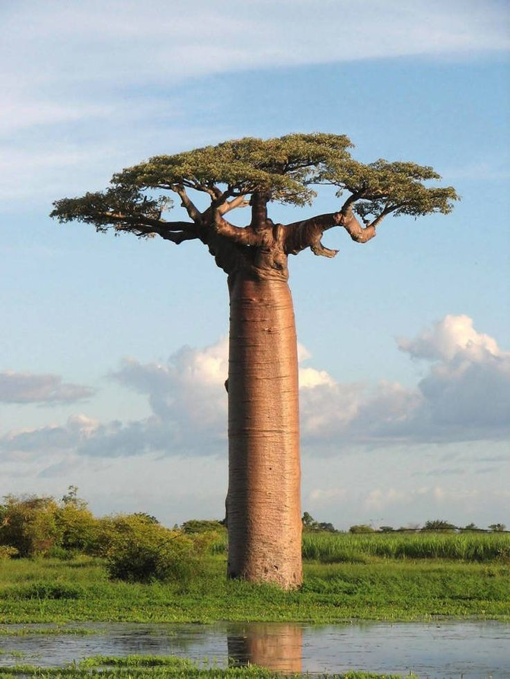

Сакура — це декоративна вишня, відома своїми ніжними рожевими квітами.
В Японії цвітіння сакури символізує красу та швидкоплинність життя.
Цвітіння цих дерев збирає тисячі людей на традиційні фестивалі ханамі.
Сакура також є популярним символом у японській культурі та мистецтві.
Квітки сакури мають короткий, але захоплюючий період цвітіння, який триває всього кілька тижнів, і цей час вважається одним із найважливіших у японському календарі.
Ці дерева є частиною культурної спадщини Японії і зустрічаються в багатьох парках та садах, де щороку відбуваються масові святкування.
Цвітіння сакури щорічно привертає увагу туристів з усього світу, адже це неймовірне природне явище, яке збирає мільйони людей, охочих побачити цей момент.

Баобаб — це дерево, що росте в Африці та відоме своєю масивною стовбуровою формою.
Воно може досягати висоти до 30 метрів, а його діаметр — понад 10 метрів.
Баобаб називають "деревом життя" через його здатність накопичувати величезні запаси води в стовбурі.
Його плоди багаті вітаміном C і використовуються в традиційній медицині та харчуванні.
Дерево також славиться своєю довговічністю, деякі баобаби живуть більше тисячі років.
У культурі багатьох африканських народів баобаб вважається священним деревом.